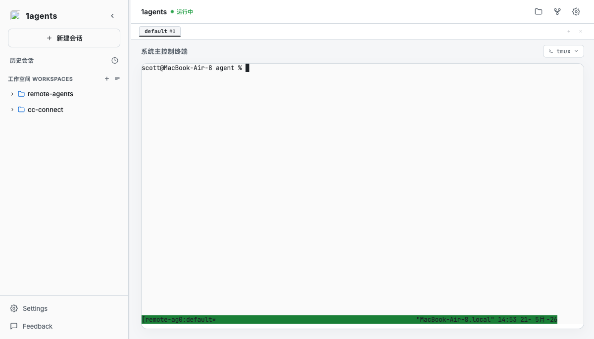
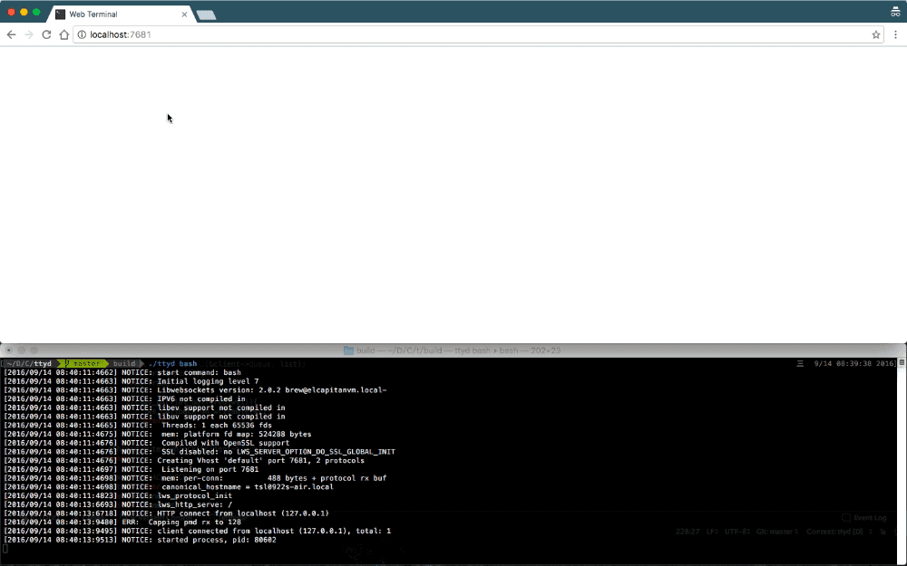

自主性命令行 Agent 虽然强悍，却易受制于本地物理设备与弱网络。Remote Agents 为其搭建了安全、自适应的多端 Web 容器，让 Agent 在后台随时随地安稳调度。
打通远程终端、文件管理和安全网络，全面释放 Claude Code 生产力。
Claude Code 执行大规模代码修改、依赖检索和项目测试，往往需要持续数分钟。
Remote Agents 将 xterm.js 与 Go 守护监视的 ttyd/tmux 深度绑定。您可以在手机上语音唤起任务，合上浏览器，Agent 将在后台稳健推进。随时连回，进度完好如初。

当 Agent 自动重写了您的 HTML slide 页面、前端视觉稿或产出了 PDF 说明报告时。
您无需再繁琐地把文件下载到本地，也无需专门在服务器上开启临时的临时服务。直接在 Remote Agents 的左侧树状目录或右侧卡片区点击文件，支持极速载入内置预览器，更能一键以 16:9 比例新标签页全屏渲染，进行原汁原味的视觉校验。

高级 API（麦克风语音听写、Service Worker 缓存）强制要求安全上下文（HTTPS）。
彻底移除臃肿的小屏工具栏，重新设计 Quick Keys 虚拟键盘为双行折叠子菜单，收纳了方向键与退格键，并**直供 claude 命令一键执行**。切换会话时，侧边栏能够自动优雅缩回，留出最大的终端阅读视野。
"给你的 CLI Agent 创造一个家， 让它从孤立黑窗口， 蜕变为触手可及的 Web 容器。"
Make a home for your CLI Agents.
Turn them from dark command lines into fully-adaptive Web spaces.